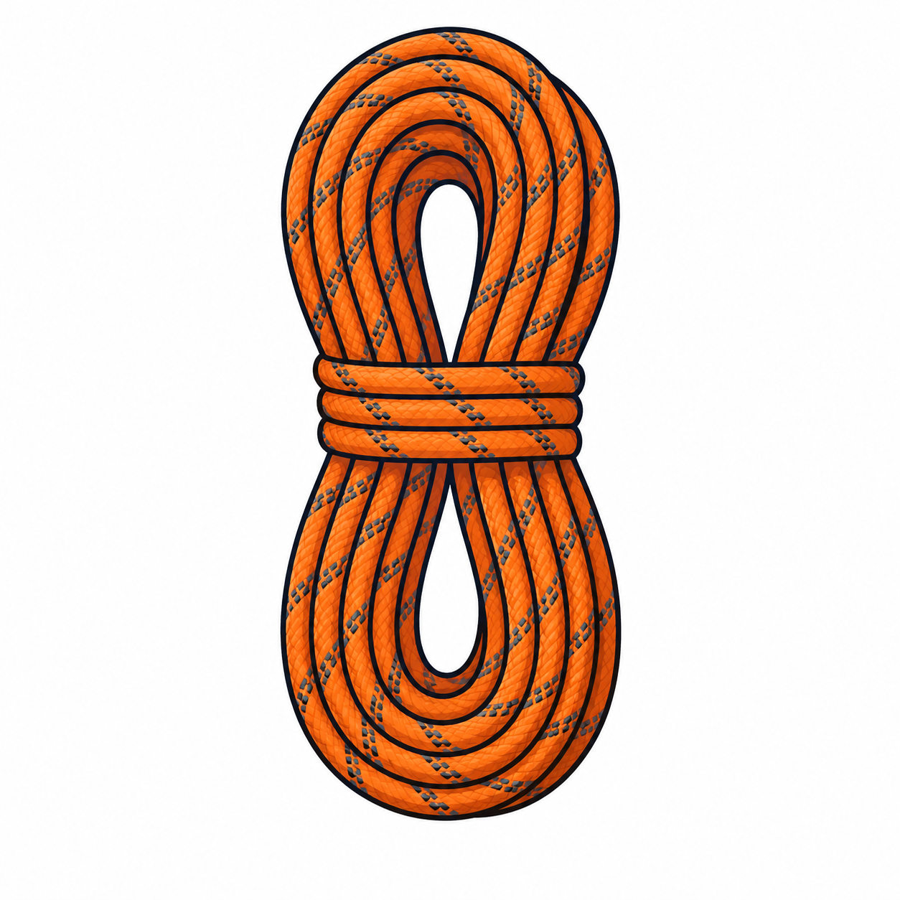

Ukázat reálnou praxi
Instruktoři, zkušenosti z lezení, práce se skupinami a konkrétní terén jsou velká výhoda.

Eventy Jinak Lezecké eventy a outdoor zážitkyO nás
Tady můžeš stavět důvěru. Tato stránka vysvětluje, proč to děláte, co je váš styl vedení akcí a v čem jste jiní než běžná anonymní nabídka zážitků.
Kdo jsme
Neprodáváte jen aktivitu. Prodáváte důvěru, zkušenost a atmosféru. Proto má stránka `O nás` svoje místo mimo nabídku služeb a rezervace.
Později sem můžeme doplnit konkrétní jména, fotky instruktorů, zkušenosti z terénu, reference firem i osobní příběh značky.
Jak působit důvěryhodně
Instruktoři, zkušenosti z lezení, práce se skupinami a konkrétní terén jsou velká výhoda.
Zákazník potřebuje cítit, že akci vede někdo kompetentní a lidský zároveň.
Nejde jen o výkon. Jde o zážitek, přírodu, důvěru a celkový pocit z akce.